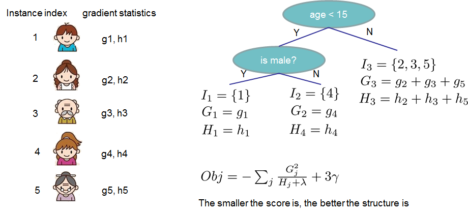

Xgboost
Introduction to XGboost
XGBoost is short for “Extreme Gradient Boosting”, This is a tutorial on gradient boosted trees by the author of xgboost.XGBoost is used for supervised learning problems, where we use the training data (with multiple features) $x_i$ to predict a target variable $y_i$.
Tree Ensemble
To begin with, let’s first learn about the model of xgboost: tree ensembles.
Introduction to CART
Decision tree learning uses a decision tree (as a predictive model) to go from observations about an item (represented in the branches) to conclusions about the item’s target value (represented in the leaves). Tree models where the target variable can take a discrete set of values are called classification trees; in these tree structures, leaves represent class labels and branches represent conjunctions of features that lead to those class labels.Decision trees where the target variable can take continuous values (typically real numbers) are called regression trees.
Decision trees used in data mining are of two main types:
- Classification tree analysis is when the predicted outcome is the class to which the data belongs.
- Regression tree analysis is when the predicted outcome can be considered a real number.
The tree ensemble model is a set of classification and regression trees (CART). CART are a non-parametric decision tree learning technique that produces either classification or regression trees, depending on whether the dependent variable is categorical or numeric, respectively.
A simple example
Here’s a simple example of a CART that classifies whether someone will like computer games.

CART Model
Usually, a single tree is not strong enough to be used in practice. What is actually used is the so-called tree ensemble model, which sums the prediction of multiple trees together.

The prediction scores of each individual tree are summed up to get the final score.
Tree Boosting
Assuming we have $K$ trees,mathematically, we can write our model in the form:
$$ \hat{yi} = \sum{k=1}^K f_k(x_i), f_k \in \mathcal{F} $$
where $K$ is the number of trees, $f$ is a function in the functional space $\mathcal{F}$, and $\mathcal{F}$ is the set of all possible CARTs. Therefore our objective to optimize can be written as
$$ \text{obj}(\theta) = \sum_i^n l(y_i, \hat{yi}) + \sum{k=1}^K \Omega(f_k) $$
The first part is the value of training loss,the second part is the value of the complexity of the trees.
Additive Training
we use an additive strategy: fix what we have learned, and add one new tree at a time. We write the prediction value at step $t$ as $\hat{y_i}^t$.So we have:
$$ \hat{y_i}^0 = 0 $$
$$ \hat{y_i}^1 = \hat{y_i}^0 + f_1(x_i)$$
$$…$$
$$\hat{y_i}^t = \hat{y_i}^{t+1} + f_t(xi) = \sum{k=1}^t f_k(x_i)$$
If we consider using MSE as our loss function, it becomes the following form.
$$\begin{split}\text{obj}^{t} & = \sum_{i=1}^n (y_i - (\hat{y_i}^{t-1} + f_t(xi)))^2 + \sum{i=1}^t\Omega(fi) \ & = \sum{i=1}^n [2(\hat{y_i}^{t-1} - y_i)f_t(x_i) + f_t(x_i)^2] + \Omega(f_t) + constant \end{split}$$
Optimize the objective
The form of MSE is friendly, with a first order term (usually called the residual) and a quadratic term. For other losses of interest (for example, logistic loss), it is not so easy to get such a nice form. So in the general case, we take the Taylor expansion of the loss function up to the second order
$$ \text{obj}^{(t)} = \sum_{i=1}^n [l(y_i, {\hat{y_i}^{t-1} +g_i f_t(x_i) +\frac{1}{2} h_i f_t^2(x_i)] + \Omega(f_t) + constant$$
where the $g_i$ and $h_i$ are defined as:
$$gi = \partial{\hat{y_i}^{t-1}} l(y_i, {\hat{y_i}}^{t-1})$$
$$hi = \partial{\hat{y_i}^{t-1}}^2 l(y_i, {\hat{y_i}}^{t-1})$$
After we remove all the constants, the specific objective at step $t$ becomes
$$ \sum_{i=1}^n [g_i f_t(x_i) + \frac{1}{2} h_i f_t^2(x_i)] + \Omega(f_t) $$
This becomes our optimization goal for the new tree. One important advantage of this definition is that it only depends on $g_i$ and $h_i$ . This is how xgboost can support custom loss functions. We can optimize every loss function, including logistic regression and weighted logistic regression, using exactly the same solver that takes $ g_i$ and $h_i$ as input!
Refine the definition of tree
We have introduced the training step, but wait, there is one important thing, the regularization! We need to define the complexity of the tree $\Omega(f)$. In order to do so, let us first refine the definition of the tree $f(x) $ as
$$ft(x) = w{q(x)}, w \in R^T, q:R^d\rightarrow {1,2,\cdots,T} $$
Here $ w $ is the vector of scores on leaves, $ q $ is a function assigning each data point to the corresponding leaf, and $ T $ is the number of leaves
Define the Complexity of Tree
In XGBoost, we define the complexity as
$$\Omega(f) = \gamma T + \frac{1}{2}\lambda \sum_{j=1}^T w_j^2 $$
The Structure Score
Here is the magical part of the derivation. After reformalizing the tree model, we can write the objective value with the $ t$-th tree as:
$$\begin{split}Obj^{(t)} &\approx \sum_{i=1}^n [gi w{q(x_i)} + \frac{1}{2} hi w{q(xi)}^2] + \gamma T + \frac{1}{2}\lambda \sum{j=1}^T wj^2\ &= \sum^T{j=1} [(\sum_{i\in I_j} g_i) wj + \frac{1}{2} (\sum{i\in I_j} h_i + \lambda) w_j^2 ] + \gamma T \end{split}$$
where $I_j = {i|q(x_i)=j} $ is the set of indices of data points assigned to the $ j $-th leaf. Notice that in the second line we have changed the index of the summation because all the data points on the same leaf get the same score. We could further compress the expression by defining $ Gj = \sum{i\in I_j} g_i $ and $ Hj = \sum{i\in I_j} h_i $:
$$\text{obj}^{(t)} = \sum^T_{j=1} [G_jw_j + \frac{1}{2} (H_j+\lambda) w_j^2] +\gamma T $$
In this equation $ w_j $ are independent with respect to each other, the form $$ G_jw_j+\frac{1}{2}(H_j+\lambda)w_j^2 $$ is quadratic and the best $w_j $ for a given structure $q(x)$ and the best objective reduction we can get is:
$$\begin{split}w_j^\ast = -\frac{G_j}{Hj+\lambda}\ \text{obj}^\ast = -\frac{1}{2} \sum{j=1}^T \frac{G_j^2}{H_j+\lambda} + \gamma T \end{split}$$
The last equation measures how good a tree structure $q(x)$ is.

Learn the tree structure
Now that we have a way to measure how good a tree is, ideally we would enumerate all possible trees and pick the best one. In practice this is intractable, so we will try to optimize one level of the tree at a time. Specifically we try to split a leaf into two leaves, and the score it gains is
$$ Gain = \frac{1}{2} \left[\frac{G_L^2}{H_L+\lambda}+\frac{G_R^2}{H_R+\lambda}-\frac{(G_L+G_R)^2}{H_L+H_R+\lambda}\right] - \gamma $$
This formula can be decomposed as:
- the score on the new left leaf
- the score on the new right leaf
- the score on the original leaf
- regularization on the additional leaf
For real valued data, we usually want to search for an optimal split. To efficiently do so, we place all the instances in sorted order, like the following picture.

A left to right scan is sufficient to calculate the structure score of all possible split solutions, and we can find the best split efficiently.